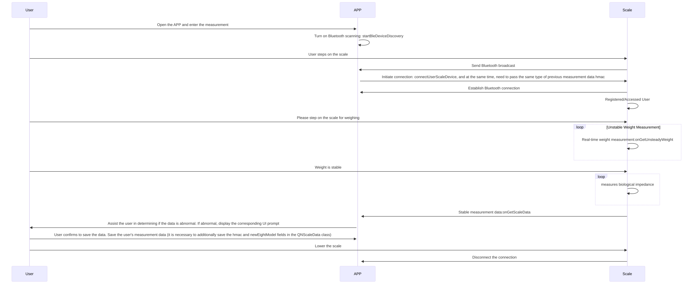
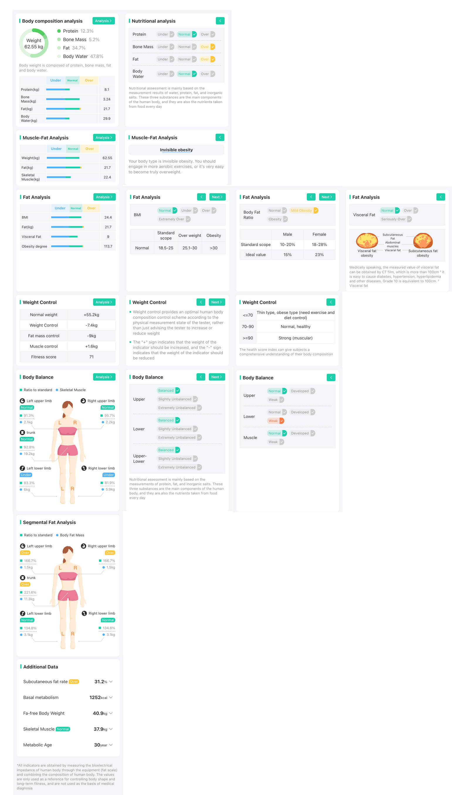
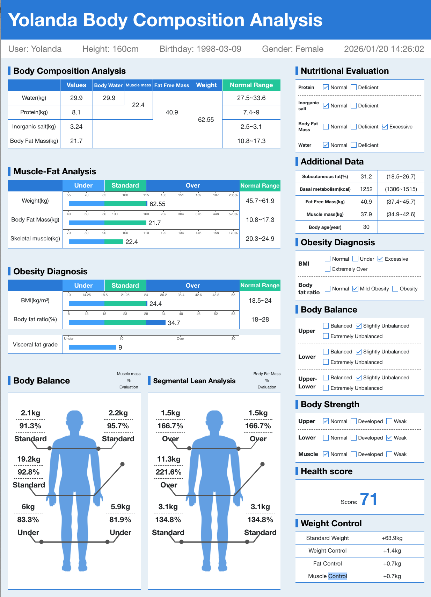
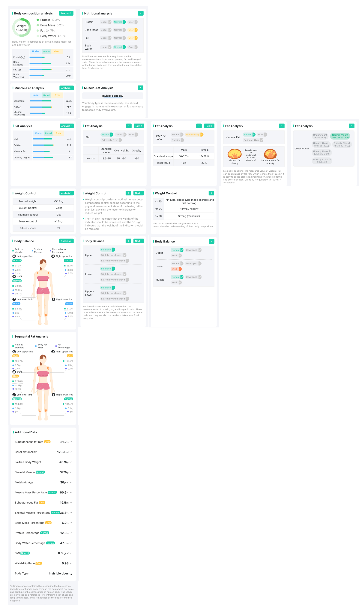
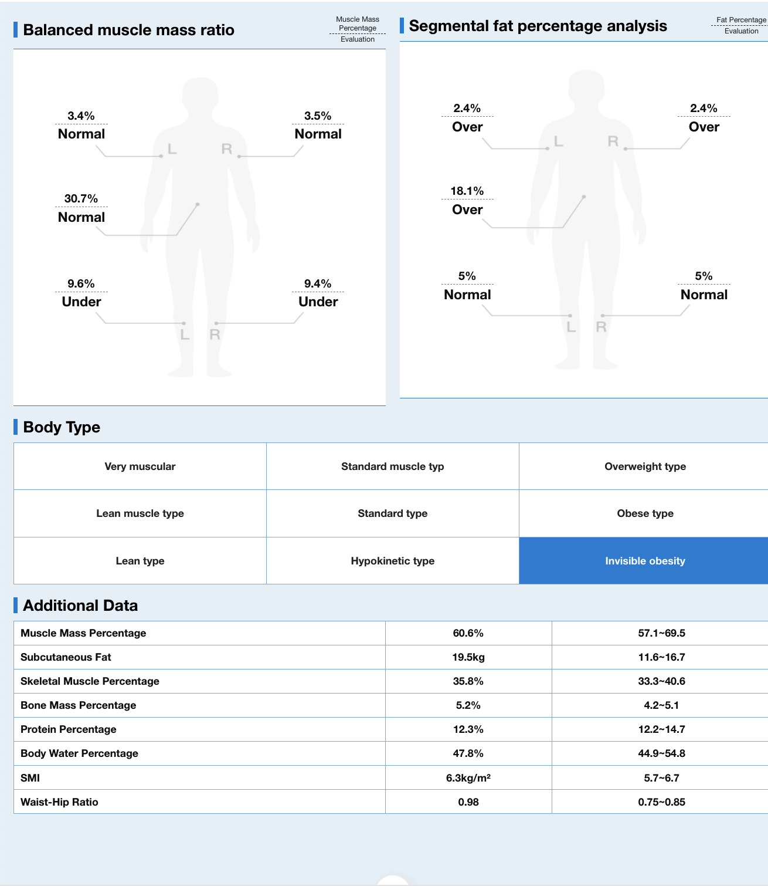

Work process

1. Apply for Plugin APPID
Fill out the data file for applying to access the plugin and provide it to the business for applying for plugin access authorization
2. Overview of Scale-side Users
The eight-electrode device is a device with users at the scale end (abbreviated as 8+1 users), where 8 represents 8 users at the scale end. The scale end can store user profiles and reference weights of 8 users, enabling the scale to automatically identify the measured user based on the reference weight and display measurement indicators such as BMI and body fat percentage on the scale surface in offline mode (without Bluetooth connection); 1 represents the guest user at the scale end, who can use the scale immediately upon connection. The scale end does not need to store the user information, and the user information is sent to the device when Bluetooth is connected. After the measurement is completed, the scale end immediately deletes the user information. Regarding the 8 user information items stored at the scale end:
- By way of registration issued to the scale end to create a new user instruction, when a user is not registered in the device for the first time using the device measurement, the user needs to register to use the scale end, that is, in the connectUserScaleDevice connected device function config configuration parameters isVisitor is set to false, and the curUser index is not assigned to the registered user; when the device registration is completed, the callback will inform the registered user of the storage pit value allocated at the scale end, that is, the index field in the user object in the registerUserComplete callback function, after getting the index, it is recommended to form an association between the unique standard, index, and mac of the measuring user and store them at the server level.
- When a registered user successfully connects to Bluetooth again before sending a deletion command to the scale, they can directly measure by accessing the index without duplicate registration. That is, the isVisitor in the config configuration parameter in the connectUserScaleDevice connected device function is set to false, and the index of curUser is filled in the index field corresponding to the user of the device
- When you need to delete a registered user in the device, the config configuration parameter userlist in the connectUserScaleDevice connected device, note that the scale end users who are not in this data will be deleted, and ensure the correctness of the user object index in the userlist For visitors to the scale end:
- Visitors can also be used directly on the scale without registration. However, this method measures in offline mode, and the device cannot automatically recognize which user is measuring and display indicators such as BMI and body fat percentage on the scale. When using visitors, simply set isVisitor in the configuration parameters in the config function of the connectUserScaleDevice connected device to true Scale end automatically recognizes user logic.
- The scale measures in offline mode. By polling the measured weight with the registered users on the scale, if the absolute difference between the benchmark weight of only one user and the current measured weight is 2kg, it is considered as the user's measurement data. The user information is used for calculation, and the BMI and body fat rate are displayed on the scale surface. The measurement data is stored on the scale and uploaded when the user completes the next Bluetooth connection measurement. The benchmark weight of the registered user will be updated every time the Bluetooth connection accesses the user to complete the measurement. At the same time, if the measurement in offline mode is recognized as the user's measurement, it will also be updated
- When the measuring device fails to recognize a specific user in offline mode, the measurement data will be stored as unknown stored data at the scale end and will be recalled upon completion of any Bluetooth connection measurement
3. Plugin Access Steps
iOS Integration Guide
Android Integration Guide
4. Device Measurement Metrics
For 8-electrode devices, the SDK will output the following 50 metrics by default: weight、BMI、body fat rate、fat mass、subcutaneous fat、subcutaneous fat mass、visceral fat、body water rate、water content、 muscle rate、skeletal muscle mass、smi、bone mass、 mineral salt rate、BMR、body type、protein、protein mass、lean body weight、muscle mass、muscle mass rate、metabolic age、health score、waist-hip ratio、obesity degree、obesity level、stand weight、weight control、fat control、muscle control、left upper limb muscle weight、right upper limb muscle weight、trunk muscle weight 、lower left muscle weight、lower right muscle weight、left upper limb fat mass、right upper limb fat mass、trunk fat mass、left leg fat mass、right leg fat mass、right arm muscle rate、left arm muscle ratio、sinew trunk ratio、left leg muscle ratio 、right lower limb muscle ratio、left upper limb fat、right upper limb fat、trunk fat 、right leg fat、left leg fat. When performing device integration, you can retrieve and save specific values as needed.
5. Measure abnormal UI prompt
If the page displays abnormally after the jump, you can refresh the webpage. Schedule-Eight Electrode Abnormal Measurement Prompts
6. Measurement Report Template
For 8-electrode measurement reports, we provide two types of templates: a web-based deep analysis report and a PDF report, both available in 34-metric and 50-metric versions to shorten the development cycle. You can generate previews or compiled outputs for viewing by following the instructions in the README.md file within the provided template project (please contact your business manager to obtain the project template). For the 50-metric version, two additional parameters, show_50_flag and whr, are required; please refer to the template project for details. If you prefer to develop reports using iOS/Android native technology stacks, you can obtain our native metric standard library from the business manager, which outputs all the metric information involved in the reports.
If you have minor adjustment requirements for the template report style, you can directly modify the layout within our template project. If you plan to adopt a completely new style, you can extract the eight-electrodes-report-standard file located under the libs folder in the project template. This file outputs all the metric standards involved in the reports.
Note: 50 metrics require SDK upgrade to V2.32.0 or higher.
36-Indicator Report
Deep Analysis Report：

PDF Report：

50-Indicator Report
Deep Analysis Report：

PDF Report：
